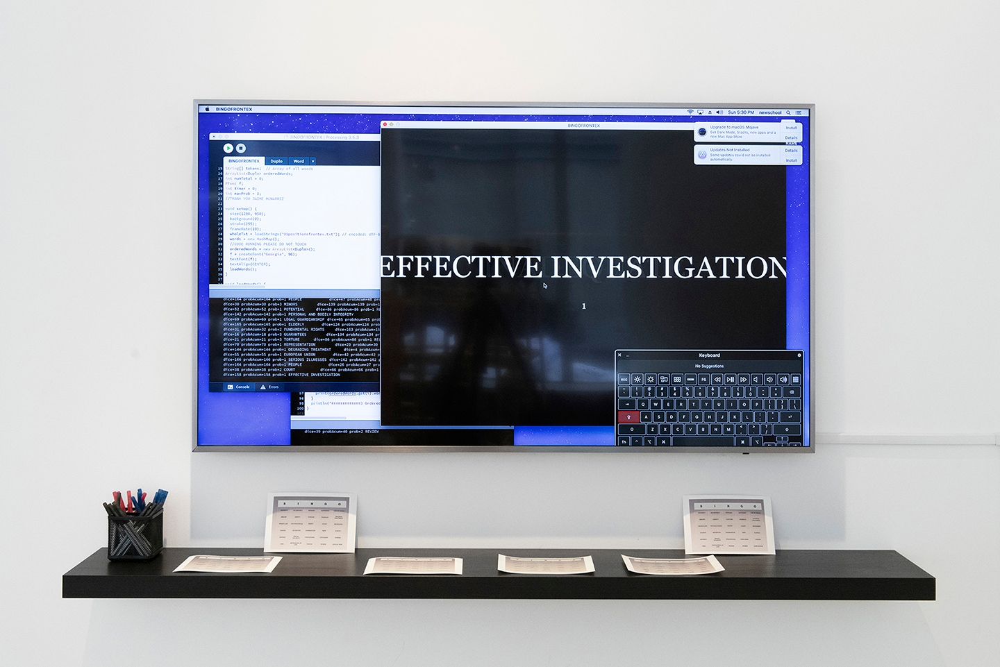

Artwork
Untitled Bingo: A Participatory Visualization of Institutional Absence
Untitled Bingo approaches amplification as a process through which systems produce visibility or invisibility. What kinds of experiences become legible through bureaucratic systems? The work focuses on the missing data in the Complaint Mechanism from Frontex, the European Union Agency managing external EU and Schengen borders. The installation materializes this process by transforming textual archives into a participatory visualization. Rather than filling gaps in data, the work investigates how these gaps themselves organize perception and amplify particular discourses. Language functions as data: collected, categorized, operationalized, and circulated through institutional systems. Untitled Bingo transforms the familiar structure of bingo into a participatory visualization of institutional language and selective visibility. The installation draws from a data corpus of bureaucratic terminology extracted from publicly available Frontex complaint documents, where experiences of displacement, detention, injury, and death are translated into administrative vocabulary. Terms such as “deprivation of life,” “irregular movement,” and “processing” are redistributed into bingo cards and appear on the screen in a loop. Participants mark corresponding terms as they appear. The term DEATH, which never appears in the data corpus of Frontex or the installation screen but it’s common to all the bingo cards make the game impossible to be completed. Untitled Bingo proposes visualization as an act of critical amplification through language. Rather than making more data visible, the installation turns attention toward what datasets fail to register and toward the social and political conditions that determine which stories become evidence and which remain absent. Administrative infrastructures amplify selected categories through repetition, circulation, and procedural consistency. Participants are invited to reflect on how systems of representation shape responsibility and memory.

Untitled Bingo: A Participatory Visualization of Institutional Absence Paula Martin Rivero.